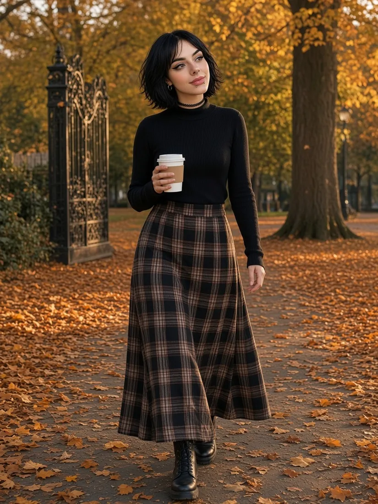

Nowość Multiwersum Eve · darmowe gry HTML5
Cześć, jestem Eve.
Wirtualna, gotycka bohaterka gier w przeglądarce. Zajrzyj do galerii, obejrzyj krótkie filmiki i zagraj — bez instalacji.


2 gry12 zdjęć · 3 filmiki
01 — O Eve
Kim jest Eve?
Eve to wirtualna bohaterka gier — dorosła, gotycka postać wygenerowana przez AI. Nie jest prawdziwą osobą. Jest twarzą multiwersum Eve: serii darmowych gier HTML5, w które zagrasz prosto w przeglądarce, bez instalowania czegokolwiek.
Wyglądczarny bob
Oczybrązowe oczy i ostry eyeliner
Kolczykiseptum i dwa kolczyki pod wargą
Biżuteriazłote koła w uszach
Dodatekczarny choker
02 — Galeria
Galeria
Kliknij zdjęcie, aby je powiększyć. Strzałki ← → przełączają kadry.
03 — Filmiki
Filmiki
Krótkie, ciche scenki z gier. Najedź lub dotknij, by odtworzyć.
Znad okularów0:08
Nie, nie, nie!0:08
04 — Gry
Zagraj z Eve
Darmowe gry HTML5 z multiwersum Eve — prosto w przeglądarce.
Eve's Café
Prowadź kawiarnię razem z Eve — parz kawę, obsługuj gości i rozwijaj lokal.

Eve — tamagotchi
Opiekuj się Eve, rozmawiaj z nią i odkrywaj jej humory. Gra na telefon i w przeglądarce — dla wszystkich.